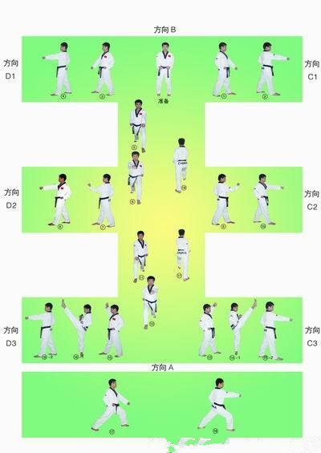
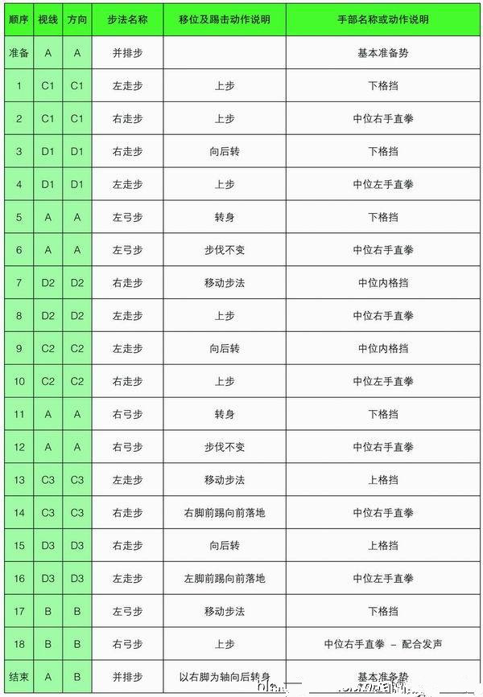

太极一章的一套动作是对八卦中“乾”（天）的运用,“乾”是八卦的第一卦,太极是万物之源，由乾开始。有天就有光和雨——这两者是自然界的开始，生长和延续所必须的,天始地成,人的生命开始于地，但延续在于天。八卦的卦象象征地表达了人、自然和宇宙的所有现象。（健也！代表万物的根源和开始）
太极一章的特点是以站势和简单的走步为主，动作由基本动作下格挡、中内格挡、上格挡、直拳、前踢组成，是跆拳道8级必修品势。
注意事项：左右移动或转身时以前脚掌为轴，上格挡前踢与直拳要同步完成，弓步移动的路线是直线。
太极一章的进行线路最终形成一个“王”字，从起点开始，最终回到起点共18个动作。
 太极1---八章动作套路分解说明
准备姿势:站于A方向位置（见太极一章演武线图，以下文中字母，均参见相应的演武线图），两脚与肩同宽，自然站立，两手握拳屈臂于腹前，拳心向内，眼睛平视前方。 1.左转身体，左脚向B方向（简称B，以下同）成左前探步（前行步），左臂下截（防左下段），右拳回收腰侧。 2.右脚向B迈进一步成右前探步，右拳前冲拳（攻击中段），左拳收回腰侧。 3.身体右转180度，右脚向H迈进一步成右前探步，右臂下截（防右下段）。 4.左脚向H迈进一步成左前探步，左拳前冲拳（攻击中段）。 5.身体左传90度，左脚向E迈进成左弓步，左拳屈肘下截（防左下段），右拳后收腰侧。 6.两脚不动，右拳前冲拳（攻中段），左拳后收腰侧。 7.左脚不动，右脚向G移步成右前探步，身体右转，左臂外格（防左中段），拳心向上，右拳后收腰侧。 8.左脚向G迈进一步成左前探步，右拳前冲拳（攻中段），左拳后收腰侧。 9．身体向C转180度，左脚向C迈进一步成左前探步，右臂屈肘向里格挡左拳前冲拳（防中段）。 10．右脚向C迈进成左弓步，左拳前冲拳（攻中段），右拳回收腰侧。 11．以左脚为轴，身体右转，左脚向E移步成右弓步，右臂屈肘上抬至左肩，然后向下截拳（防右下段），左拳回收腰侧。 12．两脚不动，左拳前冲拳（攻中段），右拳回收腰侧。 13．身体左转，左脚向D移步成左前探步，左臂屈肘上架（防左上段），置于额前，拳心朝外。 14．上提重心，左脚跟稍提，右脚前踢，两臂下截，置于体侧：右腿下落成右前探步，右拳前冲拳（攻中段）左拳回收腰侧。 15．以左脚为轴，身体右后转，右脚向F移步成右前探步，右臂屈肘上架（防右上段），置于额前，拳心朝外。 16．上提重心，右脚跟稍提，左脚前踢，两臂下截，置于体侧。左腿下落成左前探步，左拳前冲拳（防中段），右拳回收腰侧。 17．以右脚为轴，身体右转，左脚向A移步成左弓步，左臂屈肘上抬至右肩，然后向下截拳（防左下段），右拳回收腰侧。 18．右脚向A迈进一步成右弓步，右拳前冲拳（攻中段）并发声，左拳回收腰侧。 （收势）以右脚为轴，身体左后转，左脚向后撤与右脚平行，两手握拳屈臂于腹前成准备姿势。